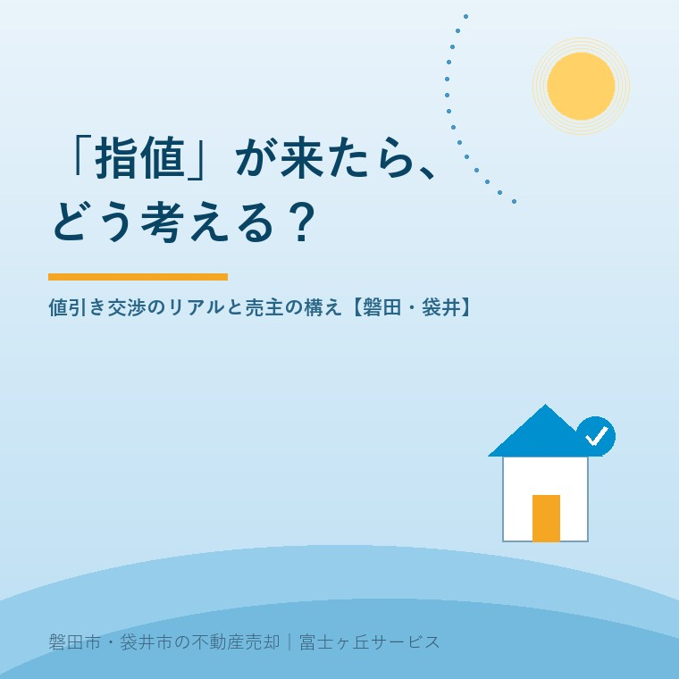

2026年8月3日｜カテゴリ：売却の実務・価格交渉

この記事の要点
Q. 売り出し中の実家に「200万円引きなら買います」という申し込みが入った。応じるべき？
A. まず、指値（値引きを前提にした購入申込）は失礼な話ではなく、「本気で買いたい」のサインです。応じるかどうかは、①相場との距離、②売り出しからの経過期間と反響、③買主の確度（ローン事前審査・引き渡し条件）の3つで判断します。あらかじめ「ここまでは応じる」という線を決めておけば、慌てず損もしません。磐田市・袋井市では、介護施設の運営から不動産事業を始めた富士ヶ丘サービスのような地域密着の会社が、交渉の場面まで並走します。
売却シリーズもいよいよ実戦編です。段取り→査定→内覧と進んで、ついに買いたい人が現れた。ところが提示された金額は、売り出し価格より200万円低い──。ここで感情的になって断るのも、不安に負けて即答で受けるのも、どちらももったいない。今日は、値引き交渉（指値）のリアルと、売主として損しない構え方の話です。
中古住宅の売買では、多少の価格交渉があるのがふつうです。だからこそ売り出し価格は、最初から交渉を見込んで設計します。よく見る「1,980万円」「2,480万円」という端数価格は、①ポータルサイトの検索レンジ（〜2,000万円等）に引っかかること、②端数を「交渉のしろ」として持っておくこと、の2つの意味があります。
注意したいのは「どうせ値引きされるから」と乗せすぎること。相場から離れた価格は、そもそも内覧が入らず、高預かりの記事で書いた「時間だけ失う」結果になります。相場に沿った価格＋ひと呼吸分の交渉余地──これが正しい設計です。
買いたい人は「買付証明書（購入申込書）」を出してきます。ここに書かれた希望金額が、いわゆる指値です。買付証明書に法的な拘束力は基本的にありませんが、交渉のスタートラインとして重要な書類です。見るべきは金額だけではありません。
| 項目 | ここを見る |
|---|---|
| 購入希望金額 | 売り出し価格との差はいくらか。相場（実勢価格）と比べてどうか |
| 資金計画 | 住宅ローンの事前審査が通っているか、現金か。ここが買主の確度そのもの |
| 手付金の額 | 手付が薄すぎる申込は、契約後の解除リスクがやや高い |
| 引き渡し時期・条件 | 「現況渡しでOK」「時期はお任せ」など、売主に有利な条件は金額差を埋める材料になる |
たとえば「200万円指値だが、現金購入・現況渡し・引き渡し時期は売主に合わせる」という申込は、「満額だがローン審査これから・家財処分は売主負担・引き渡しは急ぎ」より、総合的に良い話であることが珍しくありません。交渉は金額の一点勝負ではなく、条件の総合戦です。
大幅な指値にも、頭ごなしに怒らないのがコツです。「その金額では難しいが、○○万円なら」と逆提示（カウンター）を返せば、本気の買主なら乗ってきます。交渉の窓口はすべて不動産会社に任せ、売主は判断に集中する──これが感情のもつれを防ぐ実務の型です。
指値が入らないまま時間だけが過ぎている場合は、価格そのものが市場とズレています。目安は媒介契約の更新期である3か月。問い合わせ・内覧の数字を見て、①写真や見せ方を変える、②価格を見直す、を判断します。値下げするなら、5万円・10万円と小刻みに下げるより、検索レンジが1つ変わる幅で一度に下げるほうが効果的です。小刻みな値下げは「まだ下がる」と待たれるだけで、新しい買主の目に留まりません。
富士ヶ丘サービスは、磐田市・袋井市に特化した地域密着の会社として、「高く売り出す」ことではなく「納得して売り切る」ことを大切にしています。交渉の場面で売主さまが孤独にならないよう、判断材料を並べて一緒に考えます。売却のご相談はふじがおか実家カルテ・実家じまい相談室からどうぞ。
ふじがおか実家カルテ｜「いくらまでなら応じるか」の土台づくりに
手取りの最低ラインは、費用と税金の整理から。
登記情報と固定資産税通知書から、売却にかかる費用・税金の見通しを宅建士が整理し、交渉の判断材料としてお渡しします。
本記事は2026年8月3日時点の情報と、当社の営業経験に基づく実務上の考え方をまとめたものです。交渉の進め方は物件・市況・買主の状況により異なります。買付証明書・売買契約の個別の判断は、担当の宅地建物取引士にご相談ください。

この記事を書いた人：大石浩之（宅地建物取引士）
磐田市・袋井市で「介護×相続×空き家」に特化した不動産売却支援を行う富士ヶ丘サービスの代表取締役・宅地建物取引士。介護施設の運営から不動産事業を始めた経験をもとに、売主とご家族が困らない売却を一件ずつお手伝いしています。プロフィール
磐田市・袋井市の実家じまい・相続空き家相談
固定資産税通知書だけでも相談できます
住所があいまいでも、通知書や写真から名義・道路・農地・残置物の確認順を整理します。カルテ申込またはLINEで状況を送ってください。
富士ヶ丘サービス株式会社／静岡県磐田市見付5789番地1／TEL:0538-31-3308／静岡県知事 (2) 第14083号／代表取締役・宅地建物取引士 大石 浩之